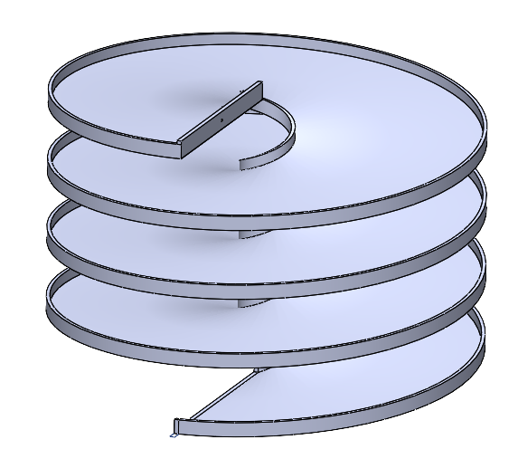

Environmental Fluid Dynamics: Turbulence
Graduate Research
Click here for more details.

Welcome! I am a Mechanical Engineering Master's student at the University of California, San Diego, with a strong focus on fluid dynamics and environmental engineering. I received my B.S. in Mechanical Engineering from UC San Diego in 2025, where I specialized in renewable energy and environmental flows. During my undergraduate studies, I worked in underwater acoustics signal processing in the Scripps Whale Acoustics Lab under Dr. John Hildebrand and Dr. Joshua Jones. My graduate thesis research is in turbulence generated in an underwater canyon, under Dr. Geno Pawlak in the Environmental Fluid Dynamics Lab. My work involves implementing numerical methods and turbulence theory to extract turbulent dissipation and upwelling rates. See below for details about my projects, education, and certifications.
Graduate Research
Click here for more details.

Mechanical Engineering Coursework
Click here for more details.

Undergraduate Research
Click here for more details.

Undergraduate & Graduate Research
Click here for more details.

Mechanical Engineering Undergraduate Senior Capstone
Click here for more details.
M.S. Mechanical Engineering (2025–2026)
B.S. Mechanical Engineering (2021–2025)
Ansys Professional
Ansys Associate
California Board for Professional Engineers, Land Surveyors, and Geologists
Credentials viewable here
Cosgrove, I., Pawlak, G., Marcelini, C., Couto, N., Le Boyer, A., Lucas, D., & Alford, M. (2026, June 14–19). Internal tide driven boundary layer turbulence in La Jolla Canyon [Poster presentation]. Gordon Research Conference on Ocean Mixing, South Hadley, MA, United States.
Saunders, M. K., Cosgrove, I. H., Ewing, J. P., Folz, N. M., Haas, K. S., Hidalgo Pla, E. C., Jones, J. M., Wu, R., & Laing, R. (2024, December 9–12). Tusâven? International partnership for acoustic monitoring of marine wildlife and underwater soundscapes in the Torngat Area of Interest, Nunatsiavut, Canada [Poster presentation]. ArcticNet 5th International Arctic Change Conference (AC2024), Ottawa, ON, Canada.